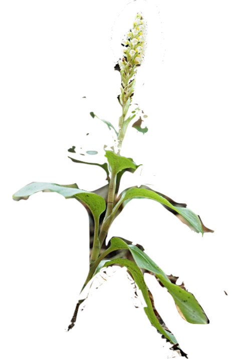

廃墟の記録

古い記事は廃墟になる。誰も訪れず、リンクは切れ、意味は風化する。 けれど廃墟は、消滅ではない。
割れ目から
コンクリートの割れ目から、緑が一本、まっすぐ伸びている。 過去の記事が、新しい記事の栄養になる。忘却は、次の芽の土壌だ。
循環する都市
この区画は夜道とつながり、静けさへ還る。 都市は死なない。ただ、絶えず作り替えられていく。

古い記事は廃墟になる。誰も訪れず、リンクは切れ、意味は風化する。 けれど廃墟は、消滅ではない。
コンクリートの割れ目から、緑が一本、まっすぐ伸びている。 過去の記事が、新しい記事の栄養になる。忘却は、次の芽の土壌だ。
この区画は夜道とつながり、静けさへ還る。 都市は死なない。ただ、絶えず作り替えられていく。